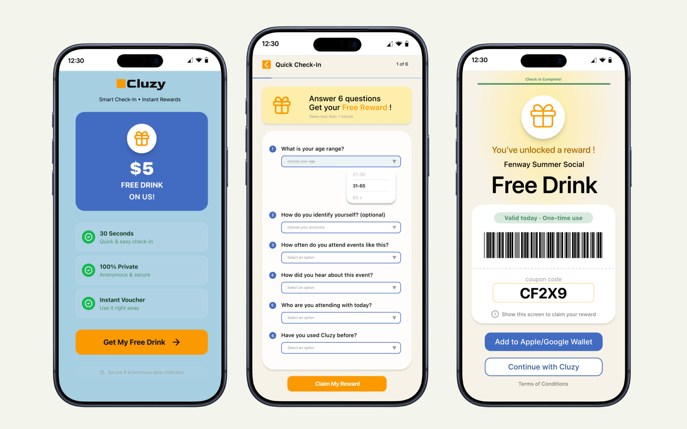
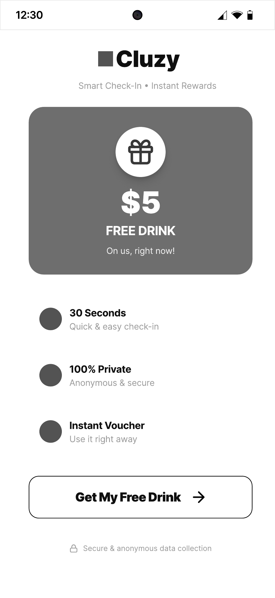
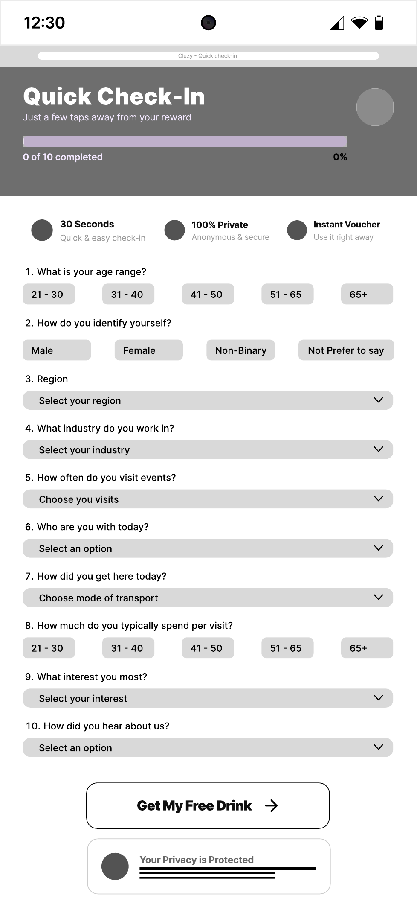
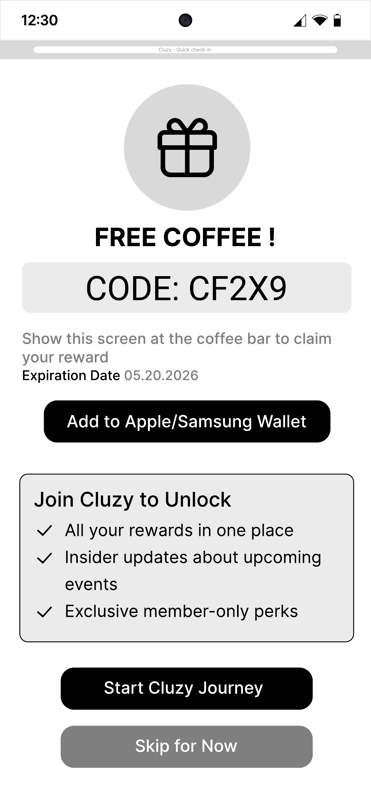
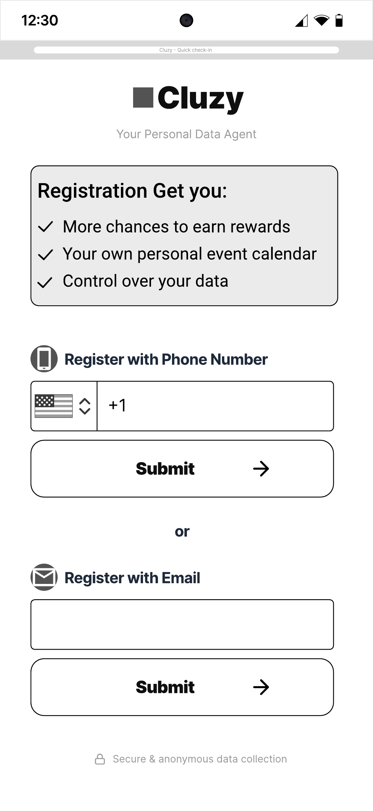
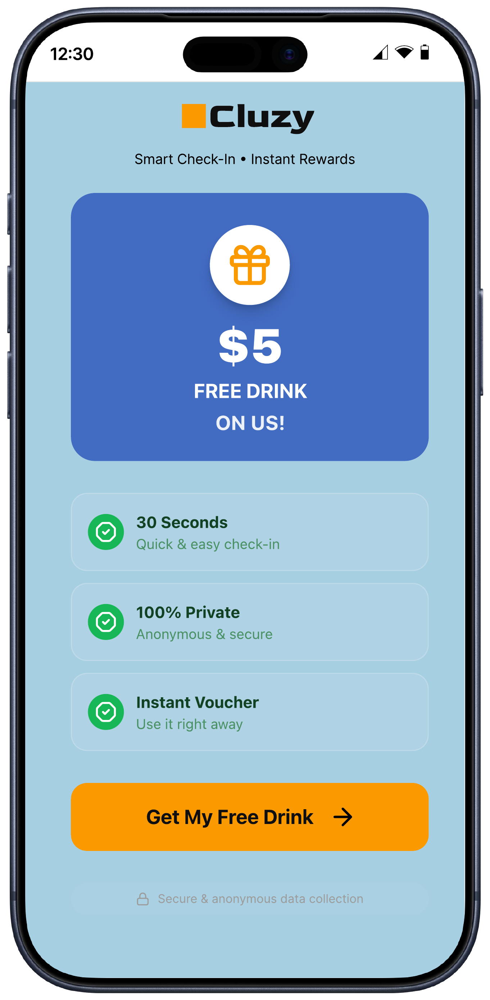
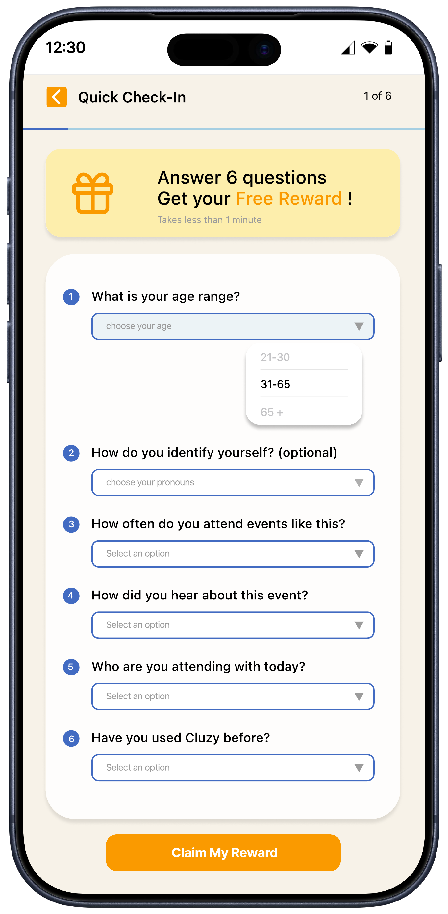
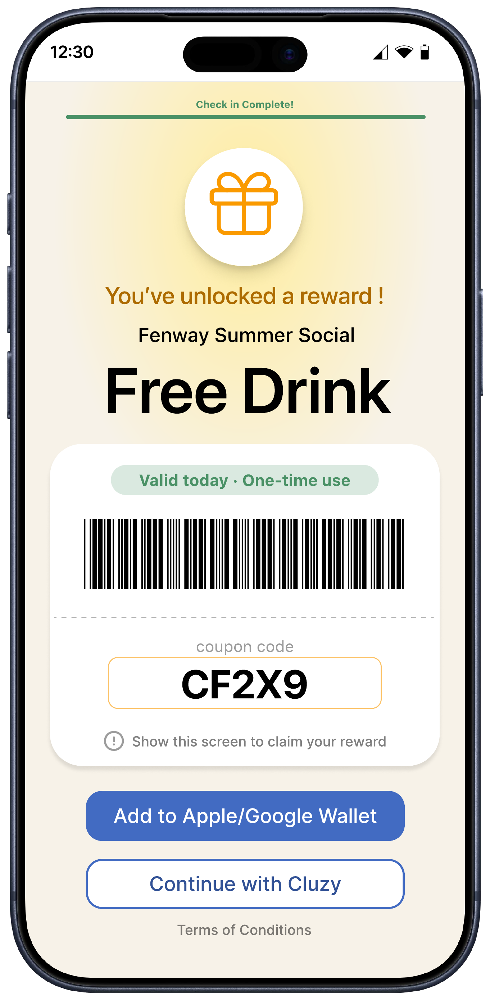
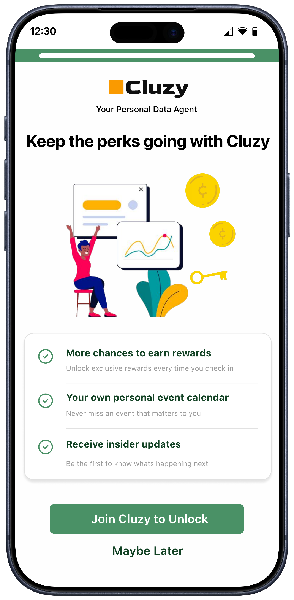
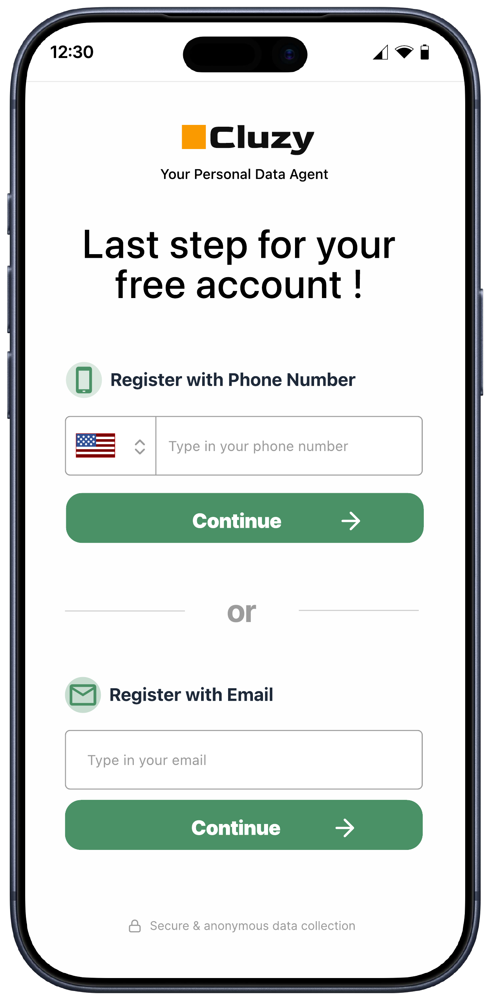

Show the reward upfront
Users wanted to know what they would receive before committing to the check-in.
Six-Week Team Project
Designing a fast QR-based event check-in experience that connects a short survey, immediate reward redemption, and optional account registration.

Project Context
Cluzy helps event organizers collect lightweight audience feedback in exchange for an immediate reward. Attendees scan a QR code, complete a short check-in, receive a voucher, and then decide whether to create a Cluzy account.
Our team focused on making that moment fast enough for a busy event environment while keeping the reward, privacy expectations, and optional registration path clear.
Research
We conducted three remote interviews with prototype walkthroughs. The sessions explored reactions to the check-in flow, reward expectations, mood-input clarity, and comfort with personal-data collection.
The strongest pattern was simple: attendees were willing to participate when the reward was visible, the form felt short, and registration remained optional.
Users wanted to know what they would receive before committing to the check-in.
The experience needed to feel completable in under a minute within a busy event setting.
Clear labels and direct questions were easier to understand than vague emoji-only inputs.
Users were more comfortable when they could claim the reward before choosing whether to join.
Wireframes
The early wireframes established the core path from reward discovery to survey completion, voucher redemption, and optional registration. They also revealed where the original concept felt crowded or asked users to make too many decisions at once.




Design Evolution
The original voucher screen also introduced membership benefits and registration actions. In the final flow, I separated these into distinct steps so users first receive the promised reward, then decide whether they want to continue with Cluzy.
This reduced cognitive load and made each screen responsible for one clear task.
Final Design
The final design follows the order an attendee would experience it at an event: understand the incentive, complete the check-in, redeem the voucher, review the value of Cluzy, and register only if interested.
The landing screen makes the incentive, expected time, and privacy promise immediately visible.

Six concise questions are grouped into one centered form with clear progress and a direct reward CTA.

The voucher confirms completion, displays the barcode and coupon code, and keeps account creation secondary.

A separate benefits screen explains what Cluzy offers without interrupting reward redemption.

Interested users can choose a familiar registration method while the privacy message remains visible.

Outcome
This project strengthened my ability to connect user research with interaction decisions. The final concept makes the incentive visible, keeps the survey focused, delivers the reward before onboarding, and gives users control over whether they continue.
The broader workflow diagram is being refined separately so the final case study can present it at a readable scale.